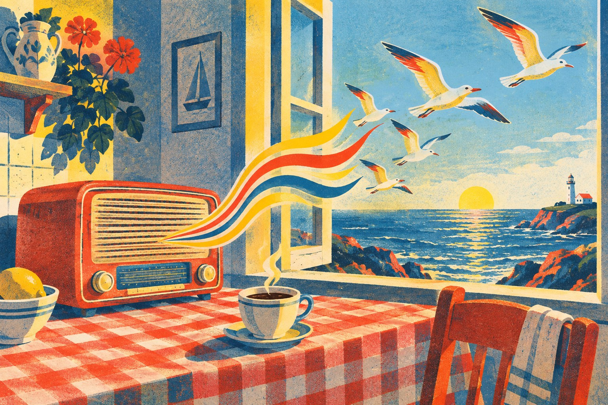
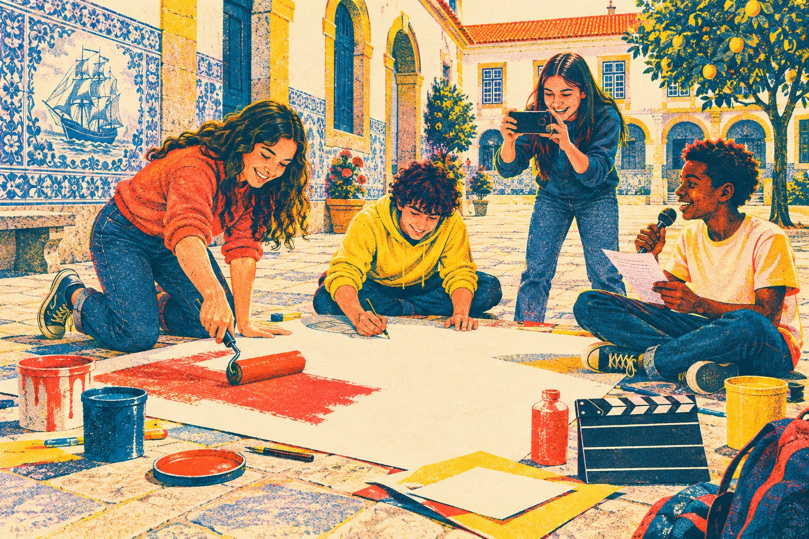

Unidade 1 · Publicidade e crítica
Unidade 7 · Contrato de leitura
Português · Língua materna · 8.º ano
Este manual acompanha-te na aula e fora dela. Cada página diz-te, no topo, que competência vais treinar — Leitura Oralidade Escrita Gramática Ed. literária — e a faixa colorida na margem diz-te de que lado estás: a vermelho, o lado de quem vende; a azul, o lado de quem julga; a amarelo, a oficina onde constróis; a âmbar, o teu percurso de leitor.
Os códigos QR abrem os áudios da unidade no telemóvel. As soluções das atividades de verificação estão no fim de cada unidade: resolve primeiro, confirma depois.
Inclui a Unidade 1 (Publicidade e crítica) e a Unidade 7 (Contrato de leitura). As Unidades 2 (Texto narrativo), 3 (Texto poético), 4 (Texto dramático), 5 (Revisões anuais) e 6 (Avaliação) juntam-se nas próximas edições, com a mesma organização.
Texto, edição, design e direção de arte: equipa de Português da Prime School. Composição em Fraunces, Bricolage Grotesque e DM Mono (SIL Open Font License).
O filme O Farol das Baleias, o Cinema Aurora, a vila de Vila Nova do Farol, as marcas, as campanhas, os jornais, os críticos e a revista A Lupa são ficcionais e foram criados para este manual. «Mar Português», de Fernando Pessoa (Mensagem, 1934), está em domínio público. Os títulos sugeridos na Unidade 7 são obras publicadas, citadas apenas pelo título e pelo autor.
Ilustrações criadas com IA generativa sob direção de arte editorial. Vozes dos áudios sintetizadas.
Prime School · Portugal · primeira edição, setembro de 2026.
© 2026 Prime School. Uso reservado aos alunos e professores da escola. Reprodução para fins letivos na própria turma autorizada.
Um anúncio promete. Um crítico julga. Um quer que faças alguma coisa; o outro quer que acredites no que ele pensa. Nesta unidade vais aprender a desmontar os dois — e depois a construir os teus.
Numa vila da costa, o velho Cinema Aurora reabre com a estreia de um filme, O Farol das Baleias. Vais ver como o filme é vendido — no cartaz, na rádio, no balde de pipocas — e como é julgado pelos críticos. No fim, fazes as duas coisas.
Ler um texto publicitário: imagem, slogan, marca, apelo. Publicidade comercial e não comercial.
Hipérbole e enumeração — no anúncio e no poema. O mesmo recurso, duas intenções.
Analisar dois anúncios de rádio e explicar a intenção de quem fala.
Criar um slogan que fica no ouvido e um anúncio completo.
Ler críticas de um filme e de um livro: tese, argumentos, exemplos, conclusão. Facto e apreciação.
Frase ativa e frase passiva — e o que se esconde quando o agente desaparece.
Escrever uma crítica com tese, argumentos e conclusão.
Estas dez frases foram apanhadas à porta do Cinema Aurora. Umas saíram de anúncios, outras de críticas. Umas dizem factos, outras dão opiniões. Consegues separá-las?
Escreve no quadrado de cada frase A se achas que vem de um anúncio ou C se vem de uma crítica.
Agora sublinha a azul as frases que dizem um facto e a vermelho as que exprimem uma apreciação. Há frases difíceis de decidir? Quais? Porquê?
Facto — informação que pode ser verificada: é verdadeira ou falsa, independentemente de quem a diz.
Apreciação — juízo de valor de quem fala. Não se verifica: concorda-se ou discorda-se, e por isso deve ser justificada.
Qual das dez frases te convenceria mais a ir ver o filme? E qual te daria mais confiança? São a mesma?
A frase 6 é uma apreciação. Reescreve-a como um facto que alguém pudesse verificar. Depois faz o contrário com a frase 3: transforma-a numa apreciação. Desafio
Um cartaz parece dizer pouco. Na verdade, cada centímetro foi decidido para te levar a fazer uma coisa: comprar um bilhete.
Quem é o emissor deste cartaz? A quem se dirige (o destinatário)? Justifica com um elemento do cartaz.
O slogan diz: «Há coisas que só se veem no escuro.» Pensa em dois «escuros» diferentes a que a frase pode referir-se. Porque é que essa ambiguidade é útil a quem vende o filme?
O cartaz cita um jornal: «Deslumbrante.» Porque é que um anúncio pede emprestada a voz de um crítico? Que palavras da crítica original poderão ter ficado de fora? Desafio
Completa com exemplos do cartaz.
Texto que combina linguagem verbal (palavras) e não verbal (imagem, cor, som, tipo de letra) para persuadir o destinatário a adotar um comportamento: comprar, aderir, participar, mudar. É curto, apelativo e pensado para ser memorizado.
Estes dois anúncios estavam lado a lado, na parede do cinema. Um quer o teu dinheiro. O outro quer outra coisa.
Estaladiças, douradas e com uma pitada de sal do Atlântico. Um balde chega para o filme inteiro — e para partilhar, se fores generoso.
Todos os anos, milhões de toneladas de plástico chegam aos oceanos. Leva a tua garrafa. Recusa o descartável.
Compara os dois anúncios. A pares
| Documento 2 · Pipocas Maré | Documento 3 · Mar Limpo | |
|---|---|---|
| Emissor | ||
| O que «vende» | ||
| O que pede ao destinatário | ||
| Apelo mais forte (razão, emoção, humor, medo) |
Promove um produto, serviço ou marca com o objetivo de obter lucro. O emissor é, normalmente, uma empresa.
Promove uma ideia, causa ou comportamento cívico — poupar água, doar sangue, votar. O emissor é, muitas vezes, uma entidade pública ou uma associação.
Uma marca de refrigerantes lança uma campanha contra o plástico nas praias. É publicidade comercial ou não comercial? Discute com a turma. Desafio
Os publicitários usam sempre as mesmas ferramentas, em combinações diferentes. Quem as conhece, vê o anúncio por dentro.
Dá ordens com simpatia.
Não percas! Reserva já.
Fala contigo, e só contigo.
Lembras-te do cheiro das pipocas?
Exagera para impressionar.
A aventura mais emocionante de todos os tempos!
Acumula elementos para dar ideia de abundância.
Mar, vento, coragem e uma baleia.
Pergunta sem esperar resposta — faz pensar.
E se o mar te pedisse ajuda?
Uma frase, dois significados.
Há coisas que só se veem no escuro.
Fica no ouvido como uma canção.
Quem vem à Aurora nunca vai embora.
Uma voz com autoridade garante a qualidade.
«Deslumbrante.» — Jornal da Costa
Opõe duas ideias para as tornar mais fortes.
O mar não cabe numa garrafa. O plástico cabe no mar.
Caça às ferramentas. Volta aos documentos 1, 2 e 3. Encontra um exemplo de cada ferramenta que conseguires e regista-o. Que ferramenta aparece mais vezes?
Qual destas ferramentas te parece mais «perigosa» para um consumidor distraído? Justifica em duas frases.
Slogan-relâmpago. Sorteia duas ferramentas (lança um dado duas vezes: 1–9) e usa-as juntas num slogan para o bar do Cinema Aurora. A pares
Dois recursos que a publicidade adora — e que a literatura usa há séculos. Um funciona como uma lupa; o outro, como uma lista que não para de crescer.
Exagero intencional: diz-se mais do que é real, para impressionar, emocionar ou fazer rir. Ninguém a lê à letra — e é por isso que resulta.
Sequência de elementos da mesma natureza, separados por vírgulas (ou por e), que cria ideia de abundância, intensidade ou ritmo.
Hipérbole (H), enumeração (E) ou as duas (H+E)? Escreve na caixa.
Torna estas frases «publicitárias». Usa uma hipérbole na primeira e uma enumeração na segunda.
Escreve uma frase para o anúncio do Cinema Aurora que junte, ao mesmo tempo, uma enumeração de quatro elementos e uma hipérbole. Sublinha cada recurso com uma cor diferente. Desafio
Em Portugal, o Código da Publicidade proíbe a publicidade enganosa. Uma hipérbole evidente («o gelado mais fresco do universo») não engana ninguém. Mas «elimina 100% das bactérias» já é uma afirmação que tem de ser verdadeira. Onde fica a fronteira? Discute com a turma.
Um poema escrito em 1934 e um anúncio de sal usam as mesmas ferramentas. Mas querem coisas muito diferentes de ti.
1Ó mar salgado, quanto do teu sal
São lágrimas de Portugal!
Por te cruzarmos, quantas mães choraram,
Quantos filhos em vão rezaram!
5Quantas noivas ficaram por casar
Para que fosses nosso, ó mar!
Valeu a pena? Tudo vale a pena
Se a alma não é pequena.
Quem quer passar além do Bojador
10Tem que passar além da dor.
Deus ao mar o perigo e o abismo deu,
Mas nele é que espelhou o céu.
Nos versos 1 e 2, o sujeito poético diz que o sal do mar são lágrimas de Portugal. Porque é que isto é uma hipérbole? Que sentimento transmite?
Nos versos 3 a 5 há uma enumeração. Quem é enumerado? Que efeito tem a repetição de quantas… quantos… quantas?
Encontra uma hipérbole e uma enumeração no documento 5. Depois completa a tabela.
| Mar Português | Sal Atlântico | |
|---|---|---|
| O que quer do leitor? | ||
| Quanto tempo «vive»? |
Na publicidade, o recurso está ao serviço de uma ação: comprar, aderir, mudar. No texto literário, está ao serviço do sentido e da emoção — o poema não te pede nada em troca, e por isso continua a ser lido quase um século depois.

Na rádio, o anúncio não tem imagem. Tudo o que te convence tem de caber na voz, na música e no silêncio. Vais ouvir cada anúncio duas vezes.
Pelo título, o que esperas ouvir em cada anúncio? Que tipo de voz e de música imaginas?
Ouve sem escrever. Qual dos dois te ficou mais na cabeça? Porquê?
Preenche a grelha enquanto ouves.
| Áudio A · Cinema Aurora | Áudio B · Mar Limpo | |
|---|---|---|
| Quantas vozes? Como são? | ||
| Som de fundo e ritmo | ||
| Verbos no imperativo | ||
| Uma pergunta ou um exagero | ||
| O que promete ou pede? | ||
| Intenção de quem fala |
Sem telemóvel? O professor pode reproduzir os áudios na aula. As transcrições estão na p. 27 — lê-as só depois de ouvires.
Escolhe um dos dois áudios — ou um anúncio que tenhas ouvido esta semana — e apresenta à turma a tua análise. Não basta dizer o que ouviste: tens de explicar o que quem fala quer de nós.
Identifica o anúncio: o que é, quem o emite, a quem se dirige.
Apresenta três recursos e o efeito de cada um.
Conclui com a intenção e dá a tua opinião, justificada.
Evita «o anúncio quer que as pessoas gostem». Sê preciso: «pretende sensibilizar os banhistas para…»
Prepara as tuas notas: só palavras-chave, nunca o texto inteiro.
Ensaia com o cronómetro do telemóvel. Grava-te uma vez e ouve-te: em que momento falaste depressa demais? O que vais mudar?
Um bom slogan cabe numa respiração, fica no ouvido e diz uma promessa. Os publicitários escrevem dezenas antes de escolherem um. Tu também vais.
Sete palavras, no máximo.
Soa bem em voz alta.
Uma palavra, dois significados.
Duas ideias frente a frente.
Laboratório. Estes slogans foram reprovados pela agência. Reescreve cada um usando a técnica indicada.
Chuva de slogans. Escolhe o produto ou a causa do teu anúncio (p. 14) e escreve pelo menos seis slogans possíveis. Não julgues ainda — primeiro, quantidade.
Lê os teus slogans a um colega. Ele escolhe o que ficou no ouvido. Assinala-o com ★. É esse que vais usar. A pares
A encomenda: cria um anúncio impresso — comercial para um produto ou serviço do Cinema Aurora, ou não comercial para uma causa da tua escola.
§1Há dez anos que o Cinema Aurora, em Vila Nova do Farol, não acendia o projetor. Reabriu esta semana com a estreia de O Farol das Baleias, a primeira longa-metragem de Marta Leal. A história é simples: Rita, uma rapariga de doze anos, vai passar o inverno com o avô, o último faroleiro da costa, e descobre que uma baleia ferida se aproxima das rochas todas as noites, atraída pela luz. Quando chega a notícia de que o farol vai ser automatizado e de que o avô terá de partir, Rita decide que alguém tem de ficar a vigiar o mar.
§2Digo-o já: é um dos filmes mais belos e mais honestos que vi este ano — ainda que não seja perfeito.
§3O primeiro trunfo do filme é a imagem. A diretora de fotografia, Sofia Brandão, filma o mar como se fosse uma personagem: ora calmo e prateado, ora negro e ameaçador. Cada plano foi pensado como um quadro. A cena em que a luz do farol varre a água e revela, por segundos, o dorso da baleia é daquelas que ficam na memória muito depois de sairmos da sala. Não há efeitos ruidosos; há paciência, e a paciência compensa.
§4O segundo trunfo são os atores. A jovem Leonor Pais, no papel de Rita, nunca parece estar a representar: desconfia, teima, erra e cresce diante de nós. Ao seu lado, Joaquim Seixas compõe um avô de poucas palavras, cuja ternura se vê mais nas mãos do que no rosto. Quando os dois partilham, em silêncio, uma sopa quente depois da tempestade, percebemos tudo o que o argumento não precisa de dizer.
§5Nem tudo, porém, está à mesma altura. A segunda metade arrasta-se: há cenas repetidas de vigília noturna que pouco acrescentam, e o conflito com os técnicos que vêm automatizar o farol é resolvido depressa demais, como se o filme tivesse pressa de chegar ao fim. A banda sonora, bonita, insiste por vezes em dizer-nos o que devemos sentir.
§6Ainda assim, estes defeitos não apagam o essencial. O Farol das Baleias é um filme sobre cuidar do que é frágil — um animal, um avô, uma profissão que está a desaparecer — e fá-lo com uma delicadeza rara. Recomendo-o a quem tem doze anos e a quem já se esqueceu de como era ter doze anos. Levem um casaco: o mar, aqui, sente-se na pele.
Texto de opinião em que o autor avalia uma obra (filme, livro, disco, espetáculo) e fundamenta essa avaliação com argumentos e exemplos. Combina informação (ficha técnica, resumo) com apreciação (juízos de valor). As marcas de subjetividade — 1.ª pessoa, adjetivos valorativos, advérbios — são normais e esperadas; o que não pode faltar é a justificação.
Sublinha a azul três factos e a vermelho três apreciações nos §1 e §3. Depois circunda todos os adjetivos valorativos que encontrares no §4.
No §3, a crítica escreve: «Cada plano foi pensado como um quadro.» Quem pensou os planos? Porque não o diz a frase? (Vais voltar a esta frase na p. 22.)
Os adjetivos valorativos são o «termómetro» da crítica. Arruma os que encontraste.
| Elogiam | Criticam | Moderam (nem bem, nem mal) |
|---|---|---|
Onde está a 1.ª pessoa? Transcreve duas expressões em que a crítica fala de si própria. Porque é que isso não torna o texto menos sério?
Resume a história do filme numa só frase, sem nenhuma apreciação.
Transcreve a frase que exprime a tese.
Completa o esquema da argumentação.
| Argumento | Exemplo que o prova |
|---|---|
Explica por palavras tuas: «cuja ternura se vê mais nas mãos do que no rosto».
A crítica recomenda o filme mas aponta-lhe defeitos no §5. Isso enfraquece ou fortalece o texto? Justifica.
«Levem um casaco: o mar, aqui, sente-se na pele.» Deve ler-se esta frase à letra? Que elogio esconde?
O cartaz da p. 5 usa uma só palavra desta crítica: «Deslumbrante». A palavra nem sequer aparece no texto! Achas que o cartaz é honesto? Desafio
Nem todos saíram da sala deslumbrados. Esta crítica foi publicada no mesmo dia num blogue de cinema.
Vou ser sincero: saí de O Farol das Baleias com mais sono do que emoção. É verdade que as imagens do mar são lindíssimas — ninguém o nega. Mas um filme não é um postal. Durante quase duas horas, esperamos que aconteça alguma coisa, e o que acontece é quase sempre o mesmo: Rita olha para o mar, o avô olha para Rita, a baleia aparece e desaparece. À minha volta, os mais novos mexiam-se nas cadeiras. Quem procurar a aventura que o cartaz promete vai ficar desiludido. Fica a fotografia; o resto afunda-se.
Em que concordam os dois críticos? Em que discordam? Completa o diagrama.
Tomás escreve «a aventura que o cartaz promete». De que acusa o cartaz? Relaciona com o que aprendeste na Parte I.
Qual das duas críticas está mais bem fundamentada? Dá dois argumentos. Atenção: não é a mesma coisa que perguntar de qual gostaste mais.
Uma aluna do 8.º ano escreveu esta crítica para a revista da escola. É sobre um livro que vais ler este ano.
Quando a professora nos disse que íamos ler um livro escrito em 1872, confesso que torci o nariz. Enganei-me. A Volta ao Mundo em 80 Dias, de Júlio Verne, é um dos livros mais divertidos que já li.
Tudo começa com uma aposta: o inglês Phileas Fogg, um homem tão pontual que parece um relógio, garante aos colegas do clube que consegue dar a volta ao mundo em oitenta dias. Parte nessa mesma noite, com o criado francês, Passepartout, e perseguido por um detetive, Fix, que o julga um ladrão.
O que mais me agradou foi o ritmo. Cada capítulo traz um obstáculo novo — uma linha de comboio que não chega ao fim, um resgate na Índia, uma tempestade no mar — e é impossível não querer saber o que vem a seguir. Gostei também do contraste entre Fogg, frio e calculista, e Passepartout, trapalhão e generoso: é ele que dá humor ao livro.
Há, no entanto, descrições longas de países e de meios de transporte que me fizeram saltar linhas. E algumas personagens de outros povos são retratadas com os preconceitos do século XIX, o que hoje nos faz pensar.
Recomendo este livro a quem gosta de aventura e de finais surpreendentes. E não, não vou contar como acaba.
Assinala na margem do texto: T (tese), A1 e A2 (argumentos), R (reserva) e C (conclusão).
Uma crítica de cinema avalia a imagem e os atores. O que avalia uma crítica de livro? Dá dois exemplos tirados do texto.
Porque é que a Beatriz não conta o final? Que regra das críticas está a respeitar?
A mesma ação pode ser contada de dois pontos de vista. Pensa numa câmara: na frase ativa, aponta para quem faz a ação; na passiva, para quem a sofre.
| Tempo | Ativa | Passiva |
|---|---|---|
| Presente | A câmara filma o mar. | O mar é filmado pela câmara. |
| Pretérito perfeito | A câmara filmou o mar. | O mar foi filmado pela câmara. |
| Pretérito imperfeito | A câmara filmava o mar. | O mar era filmado pela câmara. |
| Futuro | A câmara filmará o mar. | O mar será filmado pela câmara. |
| Pret. mais-que-perf. composto | A câmara tinha filmado o mar. | O mar tinha sido filmado pela câmara. |
Só há passiva com verbos que têm complemento direto. «O filme agradou ao público» não se transforma: ao público é complemento indireto. Experimenta: «O público foi agradado…» soa mal — e está errado.
Experimenta já. Passa para a passiva, sem mudar o tempo verbal.
Ativa (A) ou passiva (P)?
Passa para a passiva. Mantém o tempo verbal.
Passa para a ativa.
A passiva permite esconder quem fez a ação. Às vezes, porque não importa («O farol foi construído em 1890»). Outras vezes, porque dá jeito a quem fala.
Para cada frase, inventa um agente provável e reescreve-a na ativa. Em qual delas achas que o emissor preferiu não dizer quem foi? Porquê? Desafio
Vais escrever a crítica de um filme ou de um livro que conheças bem. Um crítico nunca começa a escrever sem antes ter decidido o que pensa — e porquê.
| Para juntar argumentos | Para exemplificar | Para contrapor | Para concluir |
|---|---|---|---|
| em primeiro lugar além disso por outro lado | por exemplo é o caso de basta pensar em | no entanto contudo ainda que | em suma por tudo isto assim |
Entre 180 e 250 palavras · quatro a seis parágrafos · não reveles o final.

A tua turma vai organizar uma sessão de cinema na escola. Cada grupo vende-a e julga-a — tal como fizeram o cartaz e os críticos nesta unidade.
Anúncio da sessão ou campanha não comercial ligada ao tema do filme.
Grupo · p. 13–14Anúncio de rádio de 30 segundos, gravado no telemóvel, com duas vozes.
Grupo · p. 11–12Depois da sessão, cada um escreve a sua crítica do filme.
Individual · p. 23–24Em 90 segundos, o grupo explica a intenção do seu cartaz e do seu spot.
Grupo · oral| Critério | Em construção | Consolidado | Excelente |
|---|---|---|---|
| Persuasão | Slogan pouco claro; o apelo não se percebe. | Slogan eficaz; usa dois recursos. | Imagem, som e texto convencem em conjunto. |
| Crítica | Opinião sem justificação. | Tese, dois argumentos e conclusão. | Argumentos com exemplos, reserva e estilo próprio. |
| Língua | Erros frequentes. | Conectores e passiva corretos. | Vocabulário preciso e variado. |
| Oralidade | Lê as notas. | Explica a intenção com clareza. | Convence com voz, pausa e olhar. |
Depois desta unidade, que anúncio ou que crítica passaste a ver de outra maneira? E o que queres treinar mais na próxima unidade?
p. 4 · Aquecimento. Anúncio: 1, 2, 5, 8, 10. Crítica: 3, 4, 6, 7, 9 (a 1, a 3 e a 7 podiam aparecer nos dois). Factos: 1, 3, 7, 10. Apreciações: 2, 4, 6, 8, 9. A 5 é um apelo — nem facto, nem apreciação.
p. 9 · Atividade 1. H · E · H · H · E · H+E.
p. 22 · Atividade 1. P · A · P · A · P · A. Atividade 2. a) A campanha foi lançada pela Associação Amigos da Costa. b) O cartaz é pintado pelos alunos do 8.º B. c) A jovem atriz será premiada pelo júri. d) O farol era aceso pelo avô ao anoitecer. Atividade 3. a) Rui Vaz compôs a banda sonora. b) A bilheteira do cinema venderá os bilhetes.
p. 26 · Relâmpago. 1 imperativo · 2 não comercial · 3 F · 4 hipérbole · 5 O filme foi premiado pelo júri. · 6 pela associação · 7 tese · 8 enumeração · 9 F · 10 facto.
Áudio A. — Lembras-te do cheiro das pipocas? Do escuro, mesmo antes de o filme começar? — O Cinema Aurora está de volta! Depois de dez anos de portas fechadas, a sala mais antiga da costa reabre a 3 de outubro, com a estreia de O Farol das Baleias: a aventura que está a encher salas por todo o país! — Bilhetes a quatro euros para estudantes. E, às quartas-feiras, as pipocas Maré são oferecidas pela casa! — Cinema Aurora. Quem vem à Aurora nunca vai embora.
Áudio B. Ouve. Este é o som do mar. […] Todos os anos, milhões de toneladas de plástico chegam aos oceanos. Uma única garrafa pode demorar centenas de anos a desaparecer. E, enquanto não desaparece, alguém a come, alguém fica preso nela. — Tu podes mudar isto. Leva a tua garrafa. Recusa o descartável. — O mar não cabe numa garrafa. Mas o plástico cabe no mar. Campanha Mar Limpo, uma iniciativa da Associação Amigos da Costa.
Na Unidade 1 aprendeste a desconfiar de quem te quer convencer. Aqui é ao contrário: és tu quem escolhe. Durante o ano vais assinar um contrato contigo próprio — escolher livros, lê-los ao teu ritmo, registar o que te fizeram e, no fim, perceber que leitor te tornaste.
Responde com honestidade: não há respostas certas, e só tu vais comparar este retrato com o de junho (p. ).
Quantos livros leste, por vontade própria, no último ano?
Onde e quando lês melhor?
O que te faz pegar num livro? (podes escolher vários)
Que géneros te chamam mais?
O que te faz desistir de um livro?
O livro de que mais gostaste até hoje — e uma razão.
Um livro que gostavas de ler e ainda não leste.
Um contrato tem duas faces. De um lado, a liberdade de quem lê; do outro, aquilo a que se compromete. Os direitos abaixo inspiram-se nas ideias do escritor francês Daniel Pennac, no ensaio Como um Romance.
Em grupo, escolham o direito com que mais concordam e aquele de que mais desconfiam. Preparem dois argumentos para cada um e defendam-nos num debate de dez minutos. Em grupo
Acrescenta um direito e um compromisso teus, escritos em frase curta, como os de cima. Desafio
Um colega diz: «Eu não gosto de ler.» Escreve-lhe duas frases para o convencer a dar uma oportunidade a um livro — sem promessas exageradas nem hipérboles enganosas (lembra-te da Unidade 1).
Entre , aluno(a) do 8.º ano, turma , adiante designado(a) o Leitor, e , professor(a) de Português, é celebrado o presente contrato, que se rege pelas cláusulas seguintes.
O Leitor compromete-se a ler, por escolha própria, livros ao longo do ano letivo, dos quais pelo menos um de um autor de língua portuguesa e pelo menos um de um género que nunca escolheria.
O Leitor reserva para a leitura minutos por dia, de preferência (quando e onde).
Por cada livro, o Leitor preenche um registo no diário de bordo e, uma vez por período, apresenta um livro à turma, num dos formatos da p. .
O Leitor mantém todos os direitos enunciados na p. , incluindo o de abandonar um livro, nos termos aí previstos.
O contrato é revisto no fim de cada período e pode ser alterado por acordo entre as partes. A avaliação considera o cumprimento, a qualidade dos registos e a partilha — não o número de páginas.
Vinte e quatro livros em seis rotas. Não é uma lista obrigatória: é um mapa. Marca com ○ os que te chamam, com ● os que já leste — e aceita sugestões de colegas, da biblioteca e de casa.
BichosMiguel Torga
O Cavaleiro da DinamarcaSophia de Mello Breyner Andresen
UlissesMaria Alberta Menéres
A Lua de JoanaMaria Teresa Maia Gonzalez
O Meu Pé de Laranja LimaJosé Mauro de Vasconcelos
O Gato Malhado e a Andorinha SinháJorge Amado
Mar Me QuerMia Couto
A Maior Flor do MundoJosé Saramago
A Ilha do TesouroRobert Louis Stevenson
Viagem ao Centro da TerraJúlio Verne
O HobbitJ. R. R. Tolkien
Harry Potter e a Pedra FilosofalJ. K. Rowling
WonderR. J. Palacio
O Rapaz do Pijama às RiscasJohn Boyne
A Rapariga que Roubava LivrosMarkus Zusak
O PrincipezinhoAntoine de Saint-Exupéry
O Diário de Anne FrankAnne Frank
Eu Sou MalalaMalala Yousafzai
PersépolisMarjane Satrapi · BD
O Diário de ZlataZlata Filipović
sugestão de um colega
sugestão da biblioteca
sugestão de casa
a minha descoberta
Seis livros, seis registos. Preenche um por livro, logo que o terminas (ou o abandonas). Não é um resumo: é a memória do que o livro te fez.
Um livro lido e guardado é uma sessão para uma pessoa só. Escolhe, em cada período, uma destas formas de o partilhar — e não repitas a mesma.
Regista as tuas partilhas.
| Período | Livro | Formato | Data |
|---|---|---|---|
| 1.º | |||
| 2.º | |||
| 3.º |
Volta ao teu retrato de setembro (p. ) e ao teu diário de bordo. Depois responde — desta vez, com a distância de um ano inteiro.
Qual dos livros deste ano te obrigou a ler de outra maneira — mais devagar, com mais atenção, com mais perguntas? Explica o que mudou, com um exemplo.
Cumpriste o contrato? Avalia cada cláusula com honestidade e diz o que farias de outra maneira no próximo ano.
Numa vila da costa, um cinema reabre com a estreia de um filme sobre uma baleia e um farol. Ao longo de sete sessões, vais desmontar cartazes, anúncios de rádio e campanhas; ler críticas que se contradizem; descobrir o que Fernando Pessoa e um pacote de sal têm em comum; e aprender a escrever um slogan que fica no ouvido e uma crítica em que se pode confiar. E, porque só se aprende a julgar livros lendo-os, assinas um contrato de leitura contigo próprio.